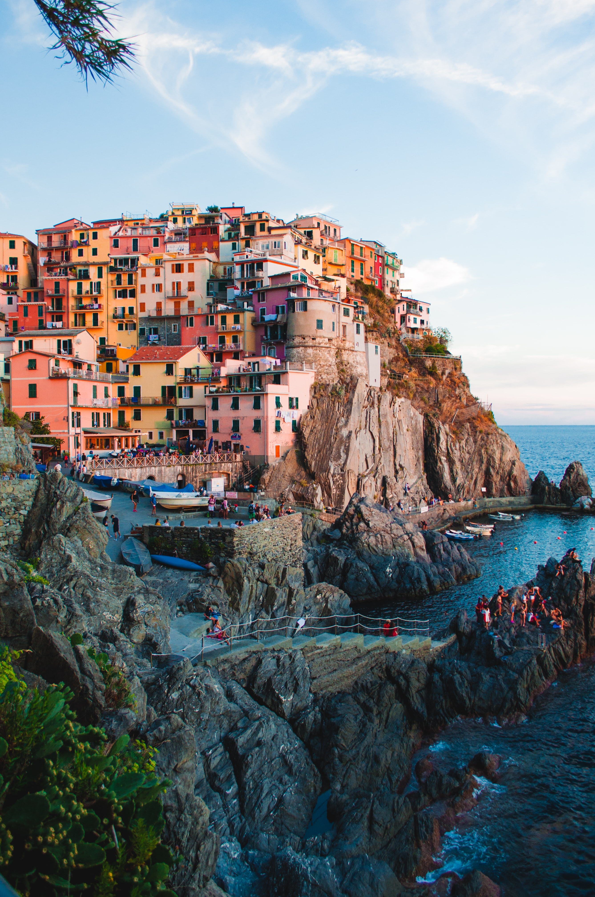

Marcel Nikolic
Berlin, Germany
Toujours à la recherche de LA photo
#travel
#architecture
Contactez-moi
Trier par
Popularité
Date
Titre
Architecture en coin
54
Architecture en Dôme
88
Architecture sur colline
63
Architecture et Contrastes
52
Portrait Noir et Blanc
55
Portrait Vintage
34

Voyage entre Couleurs et Colline
85
Solitude
88